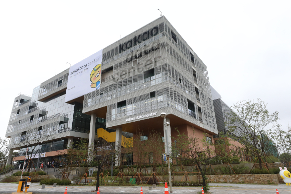

이미지 링크 테스트

페이지 내에서 이동하는 앵커 테스트
- 기사 내용 1 : "삼성전자, 올해 42개국서 스마트폰 1위…인도 시장 선두로"
- 기사 내용 2 : [사이언스샷] 기타 치는 캥거루, 발레리나 수달…올해 가장 웃긴 야생동물
- 기사 내용 3 : 카카오, 서울대 시흥캠퍼스 데이터센터 건립 무산… "새 부지 물색"
"삼성전자, 올해 42개국서 스마트폰 1위…인도 시장 선두로"
(서울=연합뉴스) 오규진 기자 = 삼성전자 스마트폰이 점유율 선두를 지키는 국가 수가 소폭 줄어들지만, 인도 시장에서 1위에 오를 것이란 전망이 나왔다. 23일 시장조사업체 카운터포인트리서치에 따르면 올해 삼성전자 스마트폰이 출하량 1위를 기록하는 시장은 조사 대상 74개국 중 42곳으로 예측됐다. 이는 지난해 46개국에서 4곳 순감한 수치다. 먼저 카운터포인트리서치는 삼성전자가 필리핀, 알제리, 가나, 쿠웨이트, 불가리아, 베네수엘라 등 6개국에서 선두 자리를 내준다고 봤다. 필리핀의 경우 삼성전자가 장기간 1위를 유지한 시장인데, 중국 제조업체 리얼미가 상반기 선보인 보급형 스마트폰 'C55'가 높은 인기를 보인 영향으로 해석했다. 반면 인도와 말레이시아에서는 출하량이 1위로 올라설 것으로 전망됐다. 세계 스마트폰 출하량 2위 인도 시장의 경우 갤럭시 보급형 라인업의 유통망 다각화와 함께 S 시리즈, Z 시리즈 등 플래그십 판매 증가가 복합적으로 작용했다. 아울러 10월 전 세계 스마트폰 판매량은 지난해 같은 기간보다 5％ 증가했다. 이는 2021년 6월 이후 28개월 만에 역성장을 멈춘 것으로, 중동·아프리카 시장에서 반등과 인도 시장의 계절적 요인 등이 반영된 데 따른다. 아이폰 15 시리즈가 지난해보다 1주일가량 늦게 출시된 점도 함께 언급됐다. 카운터포인트리서치는 "올해 4분기 스마트폰 판매량도 전년 동기 대비 증가할 것으로 기대한다"면서 "(10월의 판매 호조는) 앞으로 몇 분기 동안 시장이 점진적으로 회복하는 데 마중물 역할을 할 것으로 보인다"고 했다. acdc@yna.co.kr
[사이언스샷] 기타 치는 캥거루, 발레리나 수달…올해 가장 웃긴 야생동물

호주의 제이슨 무어는 2021년 8월 퍼스의 들판에서 회섹캥거루 무리가 모여 있는 모습을 보고 카메라를 들었다. 남반구는 이때가 늦겨울이다. 퍼스가 있는 서호주는 겨울에 비가 내리는 지중해성 기후여서 들판에는 노란 꽃들이 가득 피어 있었다. 무어는 “순간 캥거루 한 마리가 마치 손가락으로 기타 줄을 튕기는 듯한 우스운 자세를 취한 것을 포착했다”고 말했다. 배가 불룩한 암컷이었다. 웃긴 야생동물 사진전(Comedy Wildlife Photography Awards 2023)은 23일 제이슨 무아가 찍은 캥거루 사진인 ‘기타 치는 캥거루!(원제 Air Guitar Roo)’가 올해 종합 1위를 차지했다고 밝혔다. 이 사진은 육지 부문 1위상도 받았다. 우승자는 트로피와 함께 케냐 마사이 마라 국립공원에서 1주일 사파리 여행을 할 기회를 부상으로 받는다. 이와 함께 수중과 공중, 주니어 부문 상과 가작 10점도 선정됐다. 연작과 동영상 부문 상도 결정됐다.
카카오, 서울대 시흥캠퍼스 데이터센터 건립 무산… "새 부지 물색"
카카오가 서울대학교 시흥캠퍼스에 데이터센터를 지으려고 했지만 서울대와 협의 과정 중 철회했다. 자체 첫 데이터센터인 '데이터센터 안산'은 내년 1분기 가동할 예정인 가운데 카카오는 제2의 데이터센터 부지를 찾아나설 계획이다. 카카오는 최근 서울대와 시흥캠퍼스 내 데이터센터 설립을 두고 협상을 이어왔지만 결렬됐다. 당초 서울대 시흥캠퍼스 내 축구장 약 19배 크기의 국내 최대 규모 데이터센터를 세울 예정이었다. 수전용량은 100메가와트(MW) 규모로 2024년 착공해 2026년 준공이 목표였다. 양측은 양해각서 체결 등 데이터센터 건립을 위한 준비 작업을 마쳤고 도시계획 인·허가 등 행정절차를 밟을 단계였지만 내부 검토 및 양자 협의 과정에서 진행하지 않는 것으로 최종 결정했다. 제2데이터센터 건립은 계속 추진한다. 카카오 관계자는 "자사 핵심 데이터 운영 관리와 인공지능·클라우드 신사업 전개를 위해 추가 데이터 센터 건립은 다른 지역을 찾아 추진할 예정"이라고 말했다. 이어 "구체적인 협의사항 및 이유에 관해서는 자세히 말씀드리기 어렵다"며 "결정은 지자체나 시흥시 주민과는 무관하다"고 부연했다. 첫 번째 자체 데이터센터 안산은 예정대로 내년 1분기 중 가동한다. 데이터센터 안산은 연면적 4만7378㎡로 서버 약 12만대를 보관할 수 있다. 저장할 수 있는 데이터양은 미국 의회도서관 정보량의 31만배인 6엑사바이트(1EB=10억GB)에 이른다. 운영시스템 설치와 안정화 작업 등을 진행 중이다.